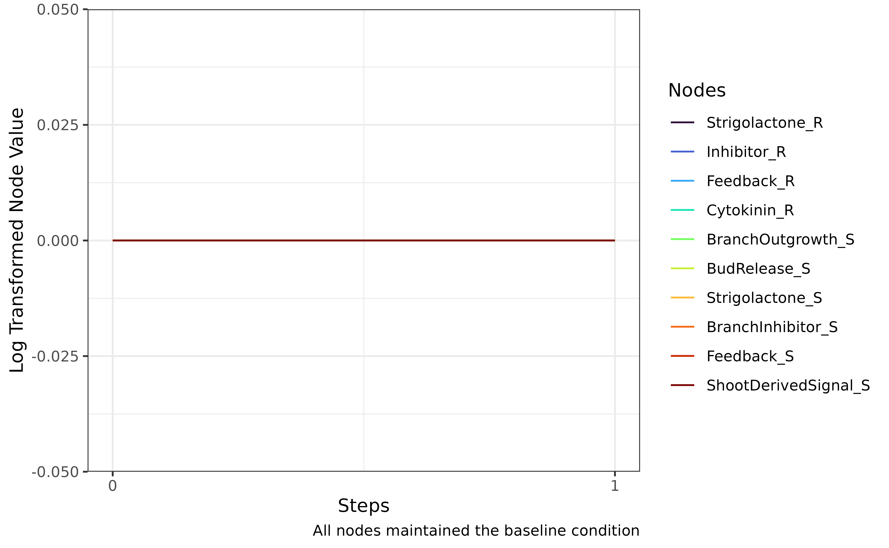
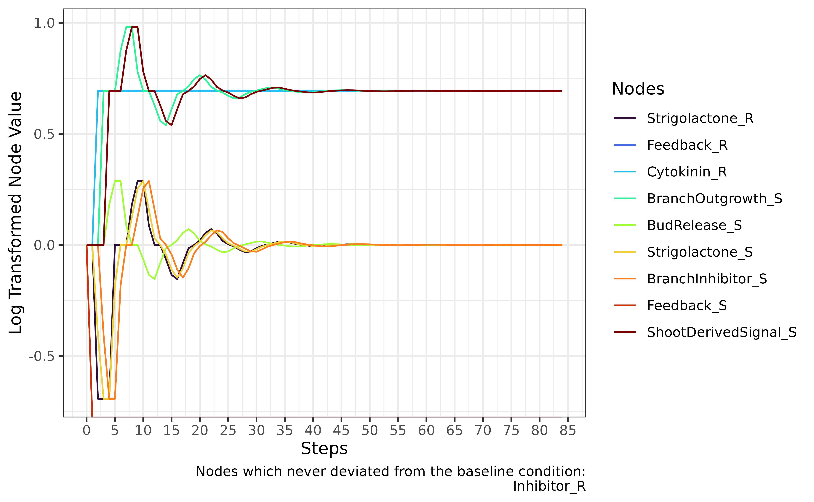
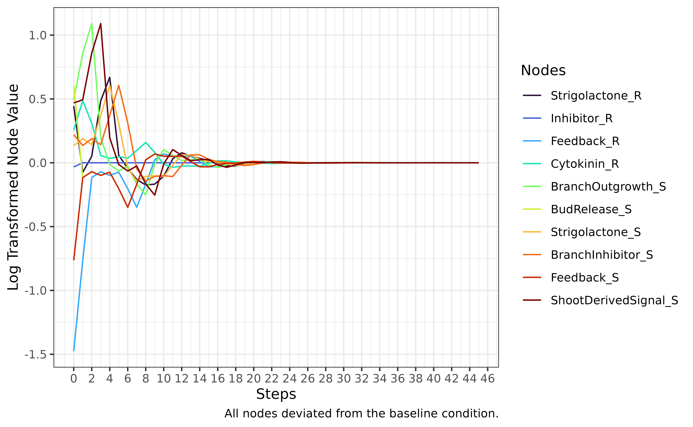
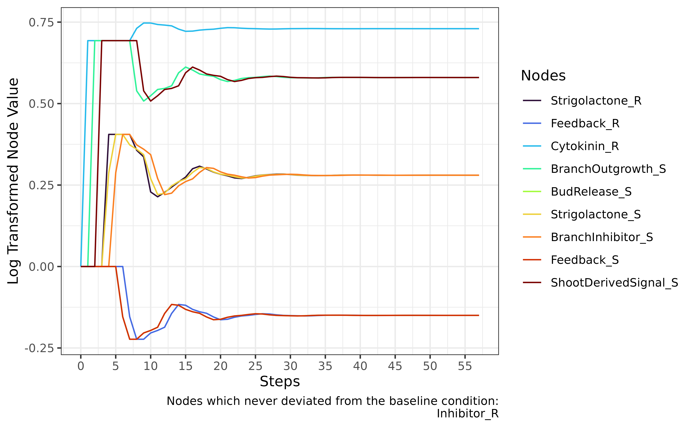
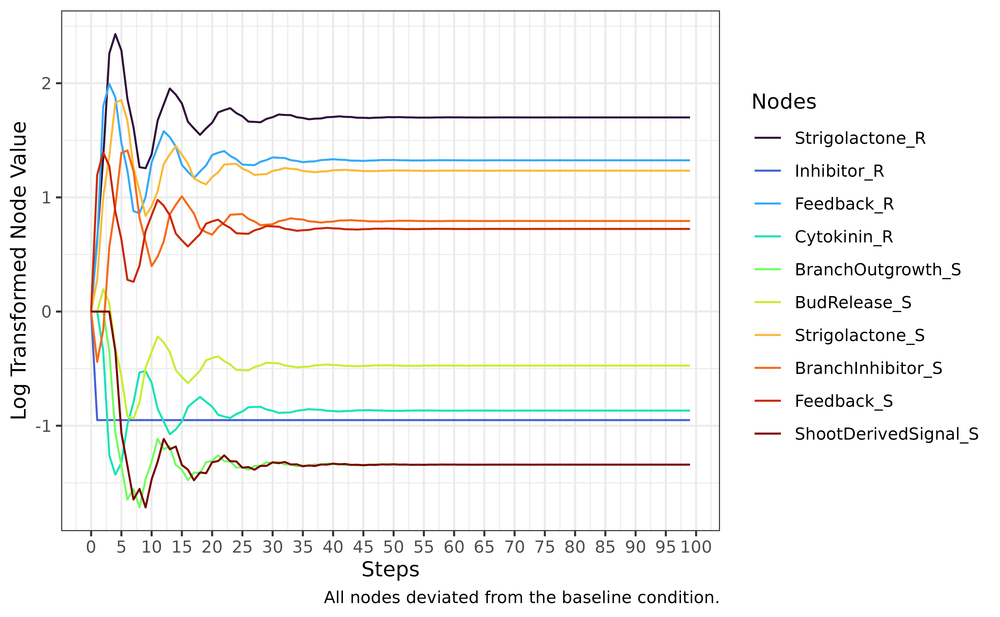

PSoup Walkthrough
02_walkthrough.Rmd
library(PSoup)
#> Loading required package: xml2
#> Loading required package: ggplot2
#> Loading required package: prodlim
#> Loading required package: stringr
#> Loading required package: reshape2
#> Loading required package: parallel
#> Loading required package: parallelly
#> Loading required package: foreach
#> Loading required package: doParallel
#> Loading required package: iteratorsThis is a short tutorial to demonstrate how you can use PSoup to simulate network outcomes. Examples will use data that is included in this package so that you can follow along even without your own network.
Importing a diagram
First start by building a diagram of your network using an editor that can support SBGN diagrams of the Activity Flow language (I recommend Newt Pathway Viewer & Editor). When building your diagram, make sure that you specify that map is of type AF, and that you only use symbols from the Activity Flow Palette. This diagram will be based on the series of statements that you have constructed describing your system. For advice on how to construct your statements, view the ‘Organising Prior Knowledge’ article. For a detailed description of how to use the Newt editor, view the ‘Newt Editor Instructions’ article. To see the algebraic rules that PSoup uses to convert a diagram to a mathematical model view the ‘Algebraic Rules’ article.
Figure 1. An example of a network diagram that can be produced using the Newt online editor.
Once you are happy with your diagram, click File ->
Export -> SBGN-ML Plain. This will generate
a text file representation of your diagram using SBGN markdown language.
You will then need to use the convertSBGNdiagram function
to translate this text file into a Network object that is easy to use.
To use the convertSBGNdiagram function, you will need to
provide two arguments. The first is the file path for the .sbgn file
that describes your diagram, the second argument asks you to provide a
name for your network.
To trial using this function, first use the below code to import the native PSoup network. This function will save the DunAFgenotype.sbgn file in a location of your choosing. This function only exists to allow the user to interact with the sbgn file for the network displayed above. You will not need to use this function if you have your own diagram.
# create a folder for the example diagram to be saved in
getExampleDiagram(folder = "~/Desktop/Diagram")The above function will generate a Diagram folder in your Desktop within which the DunAFgenotype.sbgn file will be saved. Using the provided sbgn file, we can generate a network object as demonstrated below.
# create a PSoup network object
PeaNetwork <- convertSBGNdiagram(file = "~/Desktop/Diagram/DunAFgenotype.sbgn",
networkName = "PeaNetwork")
PeaNetwork#> This is an object of class Network. It contains:
#> 10 hormones
#> BranchInhibitor_S
#> BranchOutgrowth_S
#> BudRelease_S
#> Cytokinin_R
#> Feedback_R
#> Feedback_S
#> Inhibitor_R
#> ShootDerivedSignal_S
#> Strigolactone_R
#> Strigolactone_S
#> 5 genotypes
#> RMS1
#> RMS2
#> RMS3
#> RMS4
#> RMS5Note that the hormone objects each have an underscore with wither ‘R’ or ‘S’, indicating in which compartment they are in the diagram (‘Rootstock’ and ‘Shoot’ in this case).
The above network object is also natively available in the PSoup package, and can therefore be called directly:
peaNetwork
#> This is an object of class Network. It contains:
#> 10 hormones
#> BranchInhibitor_S
#> BranchOutgrowth_S
#> BudRelease_S
#> Cytokinin_R
#> Feedback_R
#> Feedback_S
#> Inhibitor_R
#> ShootDerivedSignal_S
#> Strigolactone_R
#> Strigolactone_S
#> 5 genotypes
#> RMS1
#> RMS2
#> RMS3
#> RMS4
#> RMS5Generating a model from a diagram
Network objects can be passed to a function called
buildModel which will generate all the information that is
required to create a mathematical description of your network. You will
need to provide a directory pathway for your model information to be
stored in. This folder will be used to define your simulations, as well
as hold your simulation results. If there already exists a folder of the
specified name, this function will not overwrite the folder unless
requested to do so (you would need to pass an additional argument
forceOverwrite = TRUE to the buildModel function.).
# define the location that all simulation material will be saved
folder = "~/Desktop/Model"
# generate files necessary to run simulations
buildModel(network = PeaNetwork, folder = folder, forceOverwrite = TRUE)Within the folder that you have built, there will be three objects. Two of these objects will be data frames specifying values to be fed to the model: one will give the genotypes and their baseline values, the second will give the starting node values for the simulation.
To access the information, all you need to do is load the files into the local environment:
# To access the genotype definition object
load(paste0(folder, "/genotypeDef.RData"))
# To access the starting node value definition object
load(paste0(folder, "/nodestartDef.RData"))
genotypeDef
#> RMS1_R RMS1_S RMS5_R RMS5_S RMS3_R RMS3_S RMS4_R RMS4_S RMS2_R RMS2_S
#> 1 1 1 1 1 1 1 1 1 1 1
nodestartDef
#> Strigolactone_R Inhibitor_R Feedback_R Cytokinin_R BranchOutgrowth_S
#> 1 1 1 1 1 1
#> BudRelease_S Strigolactone_S BranchInhibitor_S Feedback_S
#> 1 1 1 1 1
#> ShootDerivedSignal_S
#> 1 1For these data frames, each row can be considered as an experimental
condition to be simulated. Data frames are initially only a single row
long, but the user can add any number of rows containing conditions that
they wish to test (more on this later). These rows can be added
manually, or they can be automatically generated using the purpose built
functions: genotypeScreen and
randomStartScreen.
In addition to these two data frames, the folder you generate will
also contain a script defining a function that is called
nextStep. This function has been automatically generated
from the PeaNetwork object based on the original diagram.
Figure 2. The nextStep function, which is automatically generated by the buildModel function.
This function is what will be doing most of the work when running simulations of the network, as it calculates the node values at each step. It contains a series of difference equations (a discrete version of a differential equation) which are the mathematical description of the information contained in the diagram. This function has been provided as a script accessible to the user in order to make the translation of the provided diagram transparent to the user. For more information on the nextStep function, view the ‘Advanced PSoup’ article (in development).
Once these three data objects have been created in your specified
folder, the path directory of this folder can be provided as input to
run simulations. If we want to run a single simulation, we can call the
simulateNetwork function. You will notice that there is a
maxStep argument. This exists to prevent the simulation running
indefinitely in the case that the model does not find a stable state.
The simulation will also terminate in the case that one of the nodes
runs off to infinity (Inf).
simulation <- simulateNetwork(folder, maxStep = 100)
head(simulation)#> $simulation
#> Strigolactone_R Inhibitor_R Feedback_R Cytokinin_R BranchOutgrowth_S
#> 2 1 1 1 1 1
#> 3 1 1 1 1 1
#> BudRelease_S Strigolactone_S BranchInhibitor_S Feedback_S
#> 2 1 1 1 1
#> 3 1 1 1 1
#> ShootDerivedSignal_S
#> 2 1
#> 3 1
#>
#> $stable
#> [1] TRUETo quickly inspect the outcome of a simulation, the
fastPlot function can be called as below. As the
genotypeDef and nodestartDef data frames in our model folder only
contain the baseline condition, the system is already at stability, and
therefore the plot shows no change. Note that in the plot below that the
node values have been log transformed. The fastPlot
function has an argument logTransform which by default is
set to TRUE. This transformation makes it easier to discern
the releative differences for positive and negative changes in the
system. If you would like to see the true node values, set this argument
to FALSE. This function is useful to make a quick diagnosis
of the system. To make high quality plots, use existing R plotting
tools.
fastPlot(simulation)
Simulating a set of conditions
It will usually be the case that you want to test a network under
multiple conditions. Sometimes there are a few specific conditions that
you want to test, other times you want to conduct an exhaustive search.
In either case, you will need to use the setupSims
function, rather than the simulateNetwork function.
If there are a few specific conditions that you want to test, you can
simply add rows to the respective genotypeDef and/or nodestartDef
object. Each row will each be considered a unique condition for a
simulation. Be careful that you maintain the original column
names generated by the buildModel function. If they are
changed, you will be unable to run simulations.
The code block below creates a 2nd and 3rd row, and assigns the value
1 to all available locations. When identifying a particular location in
a data.frame like your genotypeDef object, you can use square brackets
to identify the rows and columns
(frameName[rows, columns]). You can use this syntax even to
expand the data.frame outside of its original scope like below.
# add additional rows filled with the baseline value 1
genotypeDef[2:3, ] <- 1 # 2:3 is equivalent to c(2, 3). The empty column space indicates that all columns are selected
genotypeDef
#> RMS1_R RMS1_S RMS5_R RMS5_S RMS3_R RMS3_S RMS4_R RMS4_S RMS2_R RMS2_S
#> 1 1 1 1 1 1 1 1 1 1 1
#> 2 1 1 1 1 1 1 1 1 1 1
#> 3 1 1 1 1 1 1 1 1 1 1To start creating mutant conditions, the same square brackets method can be used to indicate the value to be changed.
# specify mutant conditions in the additional rows
genotypeDef[2, 2] <- 0 # changing the value of the 2nd row, 2nd column to 0
genotypeDef
#> RMS1_R RMS1_S RMS5_R RMS5_S RMS3_R RMS3_S RMS4_R RMS4_S RMS2_R RMS2_S
#> 1 1 1 1 1 1 1 1 1 1 1
#> 2 1 0 1 1 1 1 1 1 1 1
#> 3 1 1 1 1 1 1 1 1 1 1Another method is to specify the column that you want to change using
frameName$columnName, and then just indicating the row
index
# specify mutant conditions in the additional rows
genotypeDef$RMS1_R[3] <- 0 # changing the value of the 'RMS1_R' column, 3rd index to 0
genotypeDef$RMS1_S[3] <- 0 # changing the value of the 'RMS1_S' column, 3rd index to 0
genotypeDef
#> RMS1_R RMS1_S RMS5_R RMS5_S RMS3_R RMS3_S RMS4_R RMS4_S RMS2_R RMS2_S
#> 1 1 1 1 1 1 1 1 1 1 1
#> 2 1 0 1 1 1 1 1 1 1 1
#> 3 0 0 1 1 1 1 1 1 1 1If you want to change the values of multiple columns at once, you can use the square bracket method again, but this time listing the names of the columns to be changed.
# specify mutant conditions in the additional rows
genotypeDef[3, c('RMS1_R', 'RMS1_S')] <- 0.5 # changing the value of the 3nd row, 'RMS1_R' and 'RMS1_S' columns to 0.5
genotypeDef
#> RMS1_R RMS1_S RMS5_R RMS5_S RMS3_R RMS3_S RMS4_R RMS4_S RMS2_R RMS2_S
#> 1 1.0 1.0 1 1 1 1 1 1 1 1
#> 2 1.0 0.0 1 1 1 1 1 1 1 1
#> 3 0.5 0.5 1 1 1 1 1 1 1 1In the example above, the second row represents an ‘experimental’
condition where the function of RMS2 in the scion (shoot) has been
knocked out. The third row represents a condition where the function of
RMS1 has been reduced to half of its capacity in both the root, and the
scion. Once you have generated the specific experimental conditions that
you want to test, you must save the genotypeDef object back
into your model folder.
# save modified genotypeDef object so that it can be used for simulations
save(genotypeDef, file = paste0(folder, "/genotypeDef.RData"))NOTE: Using Excel to define your experimental conditons
In the case that you are uncomfortable interacting with a data frame via R, you can export the data frame to excel. Once you are happy with the conditions that you want to simulate, you must convert your xlsx file back into an R data frame, and save it. Keep in mind that you must not modify the column names!
First, create an Excel readable file from the genotypeDef object in order to preserve the original column names:
# create a file that can be opened in Excel
library("xlsx") # install if you do not have this package
write.xlsx(genotypeDef, row.names = F, file = paste0(folder, "/genotypeDef.xlsx"))In Excel, add a row of 1s for every condition that you want to test. Then modify values to correspond to the conditions that you want to test, with each row representing one ‘experimental condition’. Leave the first row as 1s. Once you are happy with the simulations that you want to run, save your Excel file. You will need to load the updated Excel file in to R, so that you can save it as an R data frame (overwriting the original file created by buildModel).
# create a file that can be opened in Excel
genotypeDef <- read.xlsx(file = paste0(folder, "/genotypeDef.xlsx"), sheetIndex = 1)
save(genotypeDef, file = paste0(folder, "/genotypeDef.RData"))This same process can be applied to any of the files that PSoup uses to define simulations to be run.
In the case that you want to do an exhaustive search of specifically
knockout mutations, the genotypeScreen function is useful
for automating the construction of the appropriate data frames. The
output of this function will automatically overwrite the genotypeDef
object in your folder, so you will not need to explicitly save your
genotypeDef object if you use this function.
The default behaviour of this function will create a knockout mutation for each of the genes (modifiers) in the system, one at a time (regardless of if they appear in multiple compartments).
genotypeScreen(folder)
load(paste0(folder, "/genotypeDef.RData"))
genotypeDef #> RMS1_R RMS1_S RMS5_R RMS5_S RMS3_R RMS3_S RMS4_R RMS4_S RMS2_R RMS2_S
#> 1 1 1 1 1 1 1 1 1 1 1
#> 2 0 0 1 1 1 1 1 1 1 1
#> 3 1 1 0 0 1 1 1 1 1 1
#> 4 1 1 1 1 0 0 1 1 1 1
#> 5 1 1 1 1 1 1 0 0 1 1
#> 6 1 1 1 1 1 1 1 1 0 0The genotypeScreen function can generate a data frame
with combinations of up to however many mutations that you would like to
explore, including the genotype expression values that you would like to
use for your mutations. In the case that a gene is attached to multiple
nodes in different compartments, you can choose whether to have
differential expression in the different compartments. The default
condition graft = FALSE indicates that all nodes modified
by the same gene should be modified identically. To allow for
differential expression in different compartments of the system, include
the argument graft = TRUE (eg
genotypeScreen(folder, graft = TRUE) ).
The sister function to genotypeScreen is
randomStartScreen. This function will generate a data frame
corresponding to the nodes of the network, with values indicating the
value of the node at the start of the simulation. To use this function,
you must provide the model folder path, as well as the number of restart
values that you want to generate. In addition you can also indicate what
the maximum and minimum values that you want for nodes. The default
minimum is set to 0, while the default maximum value is 2. This function
will pull values from a uniform distribution bound by these values.
randomStartScreen(folder, restarts = 5)
load(paste0(folder, "/nodestartDef.RData"))
nodestartDef #> Strigolactone_R Inhibitor_R Feedback_R Cytokinin_R BranchOutgrowth_S
#> 1 1.0000 1.0000 1.0000 1.0000 1.0000
#> 2 1.5595 0.9681 0.2286 1.2914 1.6384
#> 3 0.3068 1.3820 1.6143 1.6894 1.8513
#> 4 1.9771 0.6704 1.0885 1.0960 0.4384
#> 5 0.9526 0.1929 0.9930 0.5989 0.4613
#> 6 1.6037 1.6893 1.1424 1.7921 0.6214
#> BudRelease_S Strigolactone_S BranchInhibitor_S Feedback_S
#> 1 1.0000 1.0000 1.0000 1.0000
#> 2 1.8276 1.1447 1.2460 0.4657
#> 3 0.0760 0.9243 1.3406 1.5137
#> 4 0.8683 1.1456 0.5042 0.4706
#> 5 1.8289 0.1078 0.6614 1.2358
#> 6 0.3501 0.1684 1.0841 1.8316
#> ShootDerivedSignal_S
#> 1 1.0000
#> 2 1.5981
#> 3 1.3679
#> 4 1.4679
#> 5 1.2752
#> 6 1.1952The modifierPriorScreen function allows you to do
something similar for defining modifier values. You can learn about this
function in the ‘Advanced PSoup’ article (in development).
modifierPriorScreen allows for flexibility in defining the
distributions of modifier values. This functionality was designed with
the idea of being able to test the robustness of the network structure
and so has not been included in this walk through.
Adding an exogenous supply to a system
In addition to being able to modify the genes and node values of the
system, it is also possible to supply an external source to a node. This
external supply is constantly given throughout the course of the
simulation, with the amount added at each step to the native value in
the simulation. If giving an exogenous supply to a series of
simulations, an exogenousDef object will need to be
generated and saved in the Model folder. Once this has been done, when
calling the setupSims function, the
exogenousSupply argument must be set to TRUE if you would
like to include an exogenousSupply.
There does not exist an automatic way to create the exogenousDef
object. You can either define the object yourself, or you can ‘cheat’ by
using the nodestartDef object to quickly initiate an object
that you can manipulate into an exogenousDef object. This
can be done because both the exogenousDef and
nodestartDef objects are defining values that relate to
nodes, and therefore their column names are defined in the same way.
NOTE that the ‘exogenousDef’ object defines how much will be
supplied to each node. 0 means nothing will be added, and is therefore
the default baseline condition.
# assign the first row of the nodestartDef to exogenousDef
exogenousDef <- nodestartDef[1, ]
# assign the value 0 to all locations
exogenousDef[1, ] <- 0
exogenousDef
#> Strigolactone_R Inhibitor_R Feedback_R Cytokinin_R BranchOutgrowth_S
#> 1 0 0 0 0 0
#> BudRelease_S Strigolactone_S BranchInhibitor_S Feedback_S
#> 1 0 0 0 0
#> ShootDerivedSignal_S
#> 1 0From this starting exogenousDef object, you can add rows
to define different conditions to be simulated. Specific values can be
modified in the same way as was described above for the genotypeDef
object.
NOTE: Creating a screen of exogenous supply conditions
It is possible to quickly set up a full screen of two exogenous
treatments to the system by using the exogenousScreen
function.
exogenousScreen(c("Strigolactone_S", "Cytokinin_R"),
screen1 = 1:3,
screen2 = 1:3,
folder)
load(paste0(folder, "/exogenousDef.RData"))
exogenousDef#> Strigolactone_S Cytokinin_R
#> 1 0 1
#> 2 1 1
#> 3 2 1
#> 4 3 1
#> 5 0 2
#> 6 1 2
#> 7 2 2
#> 8 3 2
#> 9 0 3
#> 10 1 3
#> 11 2 3
#> 12 3 3Executing a simulation screen
Running a simulation screen can be done automatically by using the
setupSims function. This function will pull data objects
from the Model folder generated by the user, to define the simulations
to be run. Users can either take a combinatorial approach to running
simulations, or they can define specifically the simulations to be
run.
There are a number of arguments that can be used to specify the types
of screens to be run. These arguments, which all take a logical value,
are set to FALSE by default.
| setupSims argument | Purpose |
|---|---|
| exogenousSupply | Specifies if the exogenousDef.RData object should be
imported in order to explore how the exogenous supply of resources
affect the functioning of the network. |
| priorScreen | Specifies if the priorDef.RData should be imported in
place of the genotypeDef.RData in order to explore how
modifiers influence the functioning of the system when drawn from a
prior distribution. See the the ‘Advanced PSoup’ article (in
development). |
| robustnessTest | Indicates if the simulation being conducted is exploring the behaviour of neighboring network configurations. The consequences of this argument can be found in the ‘Advanced PSoup’ article (in development). |
| genotypeBaseline | Specifies if only the baseline condition for modifiers should be
explored regardless of the number of rows contained in the
genotypeDef object. |
| nodestartBaseline | Specifies if only the baseline condition for starting node values
should be explored regardless of the number of rows contained in the
nodestartDef object. |
| saveOutput | Indicates if the simulation output should be saved in the Model folder automatically. |
| combinatorial | In the case that multiple simulation condition objects are being explored, this states if every combination of conditions will be explored. If set to FALSE, every condition object will need to have the same number of rows (unless only the baseline condition is listed). In this instance, only corresponding rows will be simulated together. |
I know this looks very confusing, but we will go through some examples of how this works.
As a consequence of the above argument defaults, the base simulation
is to explore every combination of rows contained in the
genotypeDef and nodestartDef objects. From
there, the choice can be made to also explore every combination of
exogenously supplied resource as well, or to replace the curated
genotypeDef object with the randomly generated
priorDef object. Given what the user wants to explore at
the time, the genotypeDef and nodestartDef
objects can be restricted to only the first (baseline) row being
used.
For the chosen combination of condition objects (eg
genotypeDef/nodestartDef objects), the default behavior of PSoup is to
simulate every combination of scenarios from each object. However, if
the user wants to run a defined set of simulations, this is possible by
setting the following argument; combinatorial = FALSE. In
this case, it is necessary for any screen that is not only expressing a
single condition to have the same number of rows as the same index will
be used to cycle through all screens. Therefore, each row in an explored
screen will only be simulated against the equivalent rows in other
explored screens.
Only exploring the influence of modifiers
The following simulations will be run based on the generated condition objects depicted above.
We can start by exploring the behaviour of the genotype (modifier)
values in isolation. To do this, we will need to indicate for
setupSims to only use the baseline values of the
nodestartDef object.
Loading the file makes available an output object which
contains all simulations that were performed, including any relevant
information regarding the conditions under which the simulation was
conducted.
# quickly check the types of information contained within the output object
summary(output)
#> Length Class Mode
#> modelFolder 1 -none- character
#> parameters 2 -none- numeric
#> screen 6 -none- listTo see the location of the Model folder where all the information
relating to the simulation was stored you can call
output$modelFolder. This will return the path
directory.
To see general parameters that have been applied to all simulations, you can inspect the parameters. This will tell you how much delay was applied if you used one, and what the maxStep value was.
output$parameters
#> maxStep delay
#> 100 2The more interesting item to inspect is the screen. From the summary
we can see that it contains 6 lists. These are the 6 simulations that we
ran. Each simulation can be accessed by using the double brackets
(output$screen[[index]]).
# quickly check the types of information contained within the first simulation object
summary(output$screen[[1]])
#> Length Class Mode
#> scenario 3 -none- list
#> simulation 10 data.frame list
#> stable 1 -none- logicalEach simulation object contains three types of information. It contains the scenario used to run the simulation, the simulation itself, and a value which indicates if the simulation achieved stability before the maxStep value was reached.
The scenario information tells you the genotype (modifier), the starting node values, and what has been exogenously supplied (if there was an exogenous supply). For the first screen object, every value has the baseline condition.
output$screen[[1]]$scenario
#> $genotype
#> RMS1_R RMS1_S RMS5_R RMS5_S RMS3_R RMS3_S RMS4_R RMS4_S RMS2_R RMS2_S
#> 1 1 1 1 1 1 1 1 1 1 1
#>
#> $startingValues
#> Strigolactone_R Inhibitor_R Feedback_R Cytokinin_R BranchOutgrowth_S
#> 1 1 1 1 1 1
#> BudRelease_S Strigolactone_S BranchInhibitor_S Feedback_S
#> 1 1 1 1 1
#> ShootDerivedSignal_S
#> 1 1
#>
#> $exogenousSupply
#> NULLThe simulation information will show the through time calculations of the node values, which in this case will not have changed as the first simulation represents the baseline condition without perturbations.
output$screen[[1]]$simulation
#> Strigolactone_R Inhibitor_R Feedback_R Cytokinin_R BranchOutgrowth_S
#> 2 1 1 1 1 1
#> 3 1 1 1 1 1
#> BudRelease_S Strigolactone_S BranchInhibitor_S Feedback_S
#> 2 1 1 1 1
#> 3 1 1 1 1
#> ShootDerivedSignal_S
#> 2 1
#> 3 1Finally, the stable value is useful for seeing if stability had been achieved without manually checking. In the baseline case, stability will always be achieved, as the simulation starts off as stable.
output$screen[[1]]$stable
#> [1] TRUEIt is possible to quickly check all of the simulations in an output object at once to see if any of them failed to achieve stability. In this case, all simulations reached stability.
# return a vector indicating if each simulation managed to reach stability
stabilityVector(output)
#> [1] "All simulations reached stability."
#> [1] TRUE TRUE TRUE TRUE TRUE TRUESo far, we have only looked at the baseline conditon as the output is much smaller. But we can use the above to inspect any of the screens within output. For these more complicated simulations, it can be nice to visually inspect what is going on with a plot rather than as a data frame. Lets quickly inspect the outcome of the last simulation:
# use fastPlot to quickly view the progression of a simulation
fastPlot(output$screen[[6]])
To see the simulation condition that was just plotted we can call:
output$screen[[6]]$scenario
#> $genotype
#> RMS1_R RMS1_S RMS5_R RMS5_S RMS3_R RMS3_S RMS4_R RMS4_S RMS2_R RMS2_S
#> 6 1 1 1 1 1 1 1 1 0 0
#>
#> $startingValues
#> Strigolactone_R Inhibitor_R Feedback_R Cytokinin_R BranchOutgrowth_S
#> 1 1 1 1 1 1
#> BudRelease_S Strigolactone_S BranchInhibitor_S Feedback_S
#> 1 1 1 1 1
#> ShootDerivedSignal_S
#> 1 1
#>
#> $exogenousSupply
#> NULLThis can be a bit clunky, and contains a lot of information that we
do not care about. In reality, all we want to know are the values that
differ from the baseline. The function reportCondition()
can help us with this.
reportCondition(output$screen[[6]])
#> $genotype
#> RMS2_R RMS2_S
#> 6 0 0
#>
#> $startingValues
#> NULL
#>
#> $exogenousSupply
#> NULLDepending on the number of conditions that have been modified, this report might also become unweildy.
Only exploring the influence of the starting node values
Next we can explore the influence of the starting node values in isolation.
Lets quickly inspect the outcome of one of these simulations:
reportCondition(output$screen[[2]])
#> $genotype
#> NULL
#>
#> $startingValues
#> Strigolactone_R Inhibitor_R Feedback_R Cytokinin_R BranchOutgrowth_S
#> 2 1.5595 0.9681 0.2286 1.2914 1.6384
#> BudRelease_S Strigolactone_S BranchInhibitor_S Feedback_S
#> 2 1.8276 1.1447 1.246 0.4657
#> ShootDerivedSignal_S
#> 2 1.5981
#>
#> $exogenousSupply
#> NULL
fastPlot(output$screen[[2]])
As you can see in the above figure, even if the starting values of the system are different to that of the baseline, if the modifier values are held at baseline the system will stabilise to the baseline condition.
Only exploring the influence of an exogenous supply
If we want to explore the effects of providing an exogenous supply of resources in a baseline wildtype condition, we can do the following.
setupSims(folder, exogenousSupply = T, genotypeBaseline = T, nodestartBaseline = T)
load(paste0(folder, "/exogenousDef_Sims.RData"))Lets quickly inspect the outcome of one of these simulations:
reportCondition(output$screen[[2]])
#> $genotype
#> NULL
#>
#> $startingValues
#> NULL
#>
#> $exogenousSupply
#> Cytokinin_R
#> 2 1
fastPlot(output$screen[[2]])
Exploring modifiers pulled from a prior distribution
The final screen condition is that of taking prior distributions of the modifiers, here we are keeping all other possibilities as baseline.
setupSims(folder, priorScreen = T, nodestartBaseline = T)
load(paste0(folder, "/priorDef_Sims.RData"))Lets quickly inspect the outcome of one of these simulations:
fastPlot(output$screen[[2]])
While only screens involving a single dimension have been
demonstrated in this tutorial, it is possible to explore multiple
dimensions at once. Use the arguments of the setupSims
function to specify which objects in your model folder that you want to
explore.